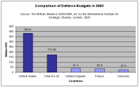

This lesson discusses the civilian and military capabilities that the European Union (EU) intends to develop; the capabilities that EU member states are currently lacking and the reasons for this deficit; and the ways in which the EU is trying to remedy the shortfalls. This lesson also provides an overview of the current state of capabilities development and the processes and initiatives that the EU is undertaking to meet its goals.
In this lesson, you will learn about the capability targets set by the EU and the difficulty in realizing these. You will also learn about the EU's efforts to develop its civilian crisis management capabilities and the challenges it continues to face in this field; the reasons behind the qualitative military shortcomings of Europe's armed forces; how improvements can be achieved in this area; and what various EU member states are doing to address the current lack of capabilities in their armed forces.
With its European Security and Defence Policy (ESDP), the European Union (EU) pursues a comprehensive approach to security that aims for a parallel and balanced development of both military and non-military capabilities. The requirements for successful crisis management at the beginning of the 21st century have become increasingly complex and demand a toolbox that extends beyond traditional military means. The declaration of the June 1999 European Council meeting in Cologne, Germany, entails a commitment by EU heads of state and government to further develop European military capabilities. At its December 1999 meeting in Helsinki, Finland, the European Council announced the EU's intention to use and enhance available civilian crisis management instruments of the EU member states as part of ESDP. In the next section, we look at the specific capability targets that the EU has committed itself to in the civilian field, and in later sections we turn to the challenge of establishing viable military capabilities.
- Police Capabilities:
- 5'000 police officers for international missions by 2003, 1'000 of which should be available at 30 days' notice.
- Rule of Law:
- 200 officials comprising legal, judicial, and prosecution experts, with lead elements to be deployable within 30 days.
- Civilian Administration:
- A pool of experts able to take on civil administration assignments, including administrative functions, such as elections, taxation, customs services; social functions, such as education, social services, health and medical services; and infrastructure functions, such as water and energy supply. No targets were set in this field.
- Civil Protection:
- Intervention teams of up to 2'000 people for major natural, technological, and environmental emergencies.
EU efforts in the civilian arena were successful with regard to police capabilities, where targets were realized ahead of schedule. Before launching its first military operation, the EU took over the International Police Task Force (IPTF) from the United Nations (UN) and deployed the EU Police Mission (EUPM) in Bosnia and Herzegovina in January 2003, with a mandate until the end of 2005. A second police mission, Operation Proxima, was established in the Former Yugoslav Republic of Macedonia (FYROM) in December 2003.
- Training and recruitment procedures are needed to improve the quality of personnel and their deployability.
- Common EU planning and mission support capacities need to be established.
- Questions of competence and institutional arrangements remain. Cooperation needs to be strengthened between the three pillars of the EU, as well as between the European and state levels.
Before continuing, please complete the two exercises below.
To sum up, while substantial progress has been made in the development of civilian capabilities, the coordination, efficiency, and financing of operations still need to be addressed. Practical experience gained from civilian missions will lead to the adjustment of procedures and will spur on the development of further capacities.
The EU's main challenge in launching crisis management operations lies not in its civilian capabilities but in its need to establish a credible military capability to back up its security and defence policy. The development of appropriate military capabilities requires far more personnel resources and financial expenditures. It also touches upon sensitive national prerogatives and needs to be long term.
- "...deploy rapidly and then sustain forces capable of the full range of Petersberg tasks as set out in the Amsterdam Treaty, including the most demanding, in operations up to corps level (up to 15 brigades or 50'000-60'000 persons).
- These forces should be militarily self-sustaining with the necessary command, control and intelligence capabilities, logistics, other combat support services and additionally, as appropriate, air and naval elements.
- Member States should be able to deploy in full at this level within 60 days, and within this to provide smaller rapid response elements available and deployable at very high readiness.
- They must be able to sustain such a deployment for at least one year. This will require an additional pool of deployable units (and supporting elements) at lower readiness to provide replacements for the initial forces."
Operational requirements for the Petersberg tasks were specified in the Helsinki Headline Goal Catalogue. Voluntary national contributions were pledged at the 2000 Capabilities Commitment Conference in Brussels, and a pool of more than 100'000 personnel and approximately 400 combat aircraft and 100 naval vessels was constituted. Despite some qualitative shortfalls, the EU declared ESDP operational at the December 2001 Laeken European Council meeting, stating that the EU was "capable of conducting some crisis-management operations". This position was confirmed in May 2003 by the General Affairs and External Relations Council (GAERC), which declared that "the EU now has operational capability across the full range of Petersberg tasks, limited and constrained by recognised shortfalls" in the military sphere.
In 2004, the European Council endorsed the Headline Goal 2010, which builds on the Helsinki Headline Goal and recognizes that existing shortfalls still need to be addressed. The Headline Goal 2010 repeats the commitment of the EU to respond with rapid and decisive action over the full range of Petersberg operations. A key element of the Headline Goal 2010 is the creation by 2007 of nine rapidly deployable battle groups, with 1'500 troops each, for deployment to international hotspots. The battle groups are to be ready to respond to a UN request anywhere in the world within 15 days and should be able to secure an area for up to 30 days, possibly three months. The plan also calls for the EU to coordinate strategic lift equipment by 2005, with fully efficient air, land, and sea strategic lift capabilities by 2010, and to make available an aircraft carrier with an air wing and escort by 2008.
Before continuing, please complete the two exercises below.
The EU's difficulties with regard to meeting the set targets are partly a result of the fundamentally changed security environment that Europe has had to adapt to since the end of the Cold War. On the one hand, the geopolitical changes have had a profound impact on the evolution of armed forces. While the European armies have staff in abundance, their ability to handle foreign contingencies that entail deployability and sustainability remains limited. On the other hand, the nature of today's armed conflicts has changed dramatically from that of the Cold War era. Intrastate conflicts have become a major security concern since the collapse of the bipolar international system. They occur against the background of weak, corrupt, or failing states and repressive regimes, they often involve non-state actors, and they are characterized by a high level of violence. Military thinking has therefore shifted from planning for defence to planning for crisis management. New tasks and challenges have been identified that demand flexibility, mobility, deployability, interoperability, and sustainability.
- Deployability
- The deployment of up to 60'000 troops in a non-European theatre within 60 days is a very ambitious task involving not only the capacity for strategic deployment, but also mechanisms and arrangements for effective and coordinated deployment. For the time being, European armies have insufficient air and sea transport capabilities to take their troops and equipment to a crisis zone. However, major multinational programmes aimed at closing the gap in key military areas, such as the purchase of the Airbus A400M transport aircraft, are under way and will improve Europe's military options considerably towards the end of the decade.
- Combat Intensity
- Of all the envisaged Petersberg tasks, the most demanding missions will be peacemaking missions. Some European forces lack standardized military training and integrated, interoperable command-and-control systems to support peacemaking missions.
- Operational Support
- The quality of European command, control, communications, and intelligence capabilities to support a crisis management operation remains questionable. Further shortfalls include insufficient reconnaissance and intelligence capabilities at the strategic and tactical levels, inadequate deployable command and control, and a lack of secure, interoperable communications.
- Technology
- Apart from upgrading their military capabilities, European armies also need to modernize their equipment. Technological superiority maximizes the striking power of armed forces and enables greater flexibility through the integration of weapons systems, as well as between combat units, logistics, and support.

However, although the EU spends almost half of the US budget on its military capability, it has only an estimated 10 per cent of the military capability of the US — even though the 25 EU member states have a combined force of 1.9 million military personnel (including 485'000 conscripts and long-term assignments from reserve forces), compared to the total US armed forces' 1.4 million personnel.
The above gives you some idea of the ways in which fragmented defence markets and disparate procurement policies have resulted in the inefficient allocation of the already limited financial resources available to Europe's armed forces. Proportionately high spending on personnel further limits the available resources for investment in new equipment and research and development. With defence spending unlikely to increase over the coming years, the key to improving Europe's military capabilities and to reaching the Helsinki Headline Goal and the Headline Goal 2010 lies in approaches that reduce costly duplications, enhance the synergies between EU member states, and enable the reallocation of financial resources.
Before continuing, please complete the exercise below.
- Air-to-air refuelling
- Theatre surveillance and reconnaissance air picture
- Strategic air mobility
- Deployable communication modules
- Precision guided munitions
The ECAP has established a process to steer member states' contributions and to improve the synergies between national defence planning and EU goals. Expert panels chaired by a lead nation are tasked with assessing specific capabilities and with working out possible solutions.
Further steps are necessary and have been initiated by the EU. While there are many intergovernmental armaments cooperation programmes and initiatives between EU member states, the limited scope and ad hoc institutional organization of these programmes and initiatives have done little to redress the problem of fragmented defence markets. A common armaments and defence industry policy could, however, result in a cooperative, cost-effective military procurement process and could end costly duplications. Based on the conclusions of the June 2003 European Council meeting in Thessaloniki, Greece, the Council of the EU established the European Defence Agency in July 2004. The mission of the Agency is to support the Council of the EU and the member states in their effort to improve the EU's defence capabilities in the field of crisis management, to promote European armaments cooperation, to strengthen the European defence industrial and technological base, and to enhance the effectiveness of European defence research and technology.
This learning module has shown how the EU plans to furnish ESDP with civilian and military capabilities. The issue of capabilities is an essential element in giving the EU the capacity to respond to international crises with civilian or military missions. Nevertheless, a credible common approach to security and defence policy will first and foremost require of the 25 EU member states a common threat perception and the political will to act.
- In the civilian arena, the EU has established four priority areas, has met the targets set therein, and has deployed two police missions in the western Balkans.
- While challenges remain — mainly with regard to training and recruitment, planning and mission support, and coherence between the pillars of the EU — practical experience will lead to the adjustment of procedures and will spur on the development of further capacities.
- Realizing the military capabilities outlined in the Helsinki Headline Goal and the Headline Goal 2010 will be difficult, due to the slow process of transformation affecting national armed forces since the end of the Cold War.
- Limited defence budgets, fragmented defence markets, disparate procurement policies, and under-investment in research and development all make existing capability shortfalls more acute.
- Even though European heads of state and government have declared ESDP operational, shortfalls with regard to deployability, mission support, combat intensity, and technology limit the range of missions that the EU will be able to conduct in the near future. However, EU initiatives to reduce costly duplications are under way.
You have completed this learning object.
You have completed this learning object.
Please click on the button to close this window.